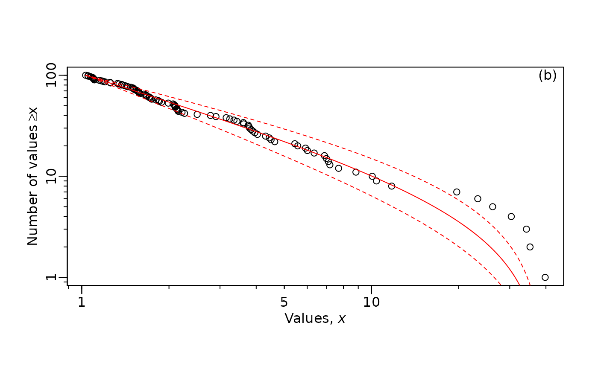

MLE Tutorial
tutorial.RmdOverview
This tutorial will introduce the sizeSpectra package
(Edwards 2020a) and go over methods for estimating the exponent of a
bounded power law (\(\lambda\)).
Introduction
Size spectra (AKA Individual Size Distributions, Community Biomass Distributions) are one of the many body-size abundance relationships. Here, we will be focusing on Individual Size Distributions (ISD, sensu White et al. 2007) where the biomass is measured (or estimated) for every single individual within a community.
Mathematical basis
The distribution of abundance (\(N\)) to body size (\(M\)) can be modeled as a bounded power law (Andersen et al. 2016) in the form:
\(\large N \propto M^ \lambda\)
Where \(\lambda\) is the rate parameter describing the decline in abundance with increasing body size and is almost always negative. For pelagic marine systems, \(\lambda \approx -2\) (Andersen and Beyer 2006, Wesner et al. 2024) and for stream communities \(\lambda\) appears to be \(\approx -1.25\) (Pomeranz et al. 2022, Gjoni et al. 2024).
More negative values of \(\lambda\) (i.e., \(\lambda = -2\)) are “steeper” and values of \(\lambda\) closer to 0 (i.e., \(\lambda = -0.5\)) are “shallower”. This means that “steep” relationships support less biomass in the large body sizes, and “shallow” relationships have more biomass in the larger body sizes.
![Figure 1. Conceptual figure showing the difference in power law exponents. A) Plot showing the frequency distribution with increasing body sizes. Both communtities have the same size range (x-axis) but the “Steep” community has relatively lower abundance of large sized idividuals. B) A conceptual diagram of a trophic pyramid for a “shallow” community and C) for a “steep” community. Note that the abundance for the smallest body sizes (width of the purple bar) is the same in both communities, but the widths of the subsequent bars are smaller in the “steep” community, culiminating in only one fish compared with two fish in the “shallow” pyramid.](trophic-pyramid.png)
This has commonly been modeled in the literature by creating body mass bins and counting (Abundance Size Spectra) or summing (Biomass size spectra) the number of individuals in each bin. The bnned data is then log-transformed and \(\lambda\) is estimated as the slope according to:
\(\large log_{10}(N) = \lambda log_{10}(M)\)
However, binning poses a number of issues and generally provides estimates of \(\lambda\) which are inaccurate and maximum likelihood methods are recommended (White et al. 2008, Edwards et al. 2017, 2020b, Pomeranz et al. 2024). One of the main issues around binning methods is the choice of the width of the bins, where the bin edges are located, and whether or not the counts (or sums) in each bin should be normalized or not (Sprules and Barth 2016).
sizeSpectra Package
Make sure you have the sizeSpectra package downloaded.
You can download it directly from github using the remotes
package
install.packages("remotes") # If you do not already have the "remotes" package
remotes::install_github("andrew-edwards/sizeSpectra")Once the package is downloaded, we need to load it into our session:
For an overview of what the package can do, see the sizeSpectra package vignettes
Other packages
I will utilize some functions from the tidyverse
package. If you need to download it, run the following command without
the #
# install.packages("tidyverse") # run this without the first `#` if you need to install the package
# load the package with the following:
library(tidyverse)## ── Attaching core tidyverse packages ──────────────────────── tidyverse 2.0.0 ──
## ✔ dplyr 1.1.4 ✔ readr 2.1.5
## ✔ forcats 1.0.0 ✔ stringr 1.5.1
## ✔ ggplot2 3.5.1 ✔ tibble 3.2.1
## ✔ lubridate 1.9.3 ✔ tidyr 1.3.1
## ✔ purrr 1.0.2
## ── Conflicts ────────────────────────────────────────── tidyverse_conflicts() ──
## ✖ dplyr::filter() masks stats::filter()
## ✖ dplyr::lag() masks stats::lag()
## ℹ Use the conflicted package (<http://conflicted.r-lib.org/>) to force all conflicts to become errorsData Simulation
Let’s start off by simulating a vector of body size data. I first set the seed to make these reproducible.
The above code samples n = 100 body sizes from a power
law with an exponent (\(\lambda\)) of
b = -2. Becasue this is a bounded power law, we set the
minimum size (xmin = 1) and the maximum
(xmax = 100). You can think of this body size range as a
sample of fish from 1 to 100 grams. I have named it m2 to
keep track of what exponent was used (i.e., -2).
Let’s sort the vector and view it:
sort(m2)## [1] 1.031254 1.050242 1.052482 1.068892 1.078987 1.090212 1.091879
## [8] 1.096940 1.097447 1.105043 1.105656 1.150811 1.170271 1.184734
## [15] 1.202709 1.252720 1.257296 1.329037 1.344897 1.374894 1.375970
## [22] 1.407335 1.424700 1.442556 1.477159 1.500558 1.510231 1.512183
## [29] 1.525338 1.543561 1.555712 1.567009 1.574345 1.579945 1.587565
## [36] 1.638134 1.663654 1.670502 1.679448 1.707943 1.714393 1.735188
## [43] 1.744063 1.801734 1.840380 1.852207 1.885163 1.988581 2.067230
## [50] 2.085163 2.097940 2.099015 2.099241 2.128986 2.135262 2.144477
## [57] 2.152524 2.218293 2.263141 2.502275 2.781777 2.905435 3.151122
## [64] 3.243437 3.352427 3.431242 3.612429 3.619371 3.757589 3.777959
## [71] 3.793802 3.841063 3.894318 3.957045 4.038995 4.308761 4.436295
## [78] 4.502082 4.634859 5.436690 5.564273 5.918682 6.008242 6.340840
## [85] 6.880768 6.987371 7.096980 7.183357 7.700765 8.836448 10.061311
## [92] 10.401013 11.740112 19.688841 23.269900 26.192331 30.367621 34.259411
## [99] 35.251265 39.758232We can see that most body sizes are less than 10, and there are very few large body sizes in this sample. Note also that the largest body size is ~40, even though we set our size bounds from 1 to 100.
Estimating \(\lambda\)
We will estimate \(\lambda\) from this vector of body size data.
We will use the
calcLike()function.-
This function requires us to specify the
negLL.fn = negLL.PLB.- We use this one becasue we have continuous body size estimates for all individuals
- More options and details on this later.
We also need to supply information on the data including
min,max,n, and the sum of the log-transformed values.The code looks like this:
mle_lambda_2 <- calcLike(
negLL.fn = negLL.PLB, # continuous estimates of all individuals
x = m2, # the vector of data
xmin = min(m2), # the minimum body size
xmax = max(m2), # the maximum body size
n = length(m2), # the number of observations
sumlogx = sum(log(m2)), # sum of log-transformed data
p = -1.5) # starting point, arbitrary numberLet’s look at the result:
mle_lambda_2## $MLE
## [1] -1.871733
##
## $conf
## [1] -2.111733 -1.647733The results are returned as a list with MLE being the
estimate of \(\lambda\) based on our
data.
conf includes the lower and upper bound for a 95%
confidence interval of \(\lambda\).
So, based on the data we estimate that \(\lambda = -1.87\) and the 95% confidence interval is: \(-2.11, -1.65\).
Plotting estimates and data
Edwards provides a function called MLE.plot(). This
function requires a vector of body sizes and the MLE results.
MLE.plot(x = m2, # vector of simulated body sizes
b = mle_lambda_2$MLE, #lambda estimate
confVals = c(mle_lambda_2$conf[1],# confidence interval
mle_lambda_2$conf[2]),
panel = "b", #This option includes the estimate and CI
log="xy") # you can change this to just x
Here is the same plot as above but with only the x-axis log transformed.
MLE.plot(x = m2,
b = mle_lambda_2$MLE,
confVals = c(mle_lambda_2$conf[1],
mle_lambda_2$conf[2]),
panel = "b",
log="x") # Just the x axis transformedThere is an alternative option using panel = "h". This
option displays the estimate of \(\lambda\) on the figure, but cannot include
confidence itnervals.
MLE.plot(x = m2, # vector of simulated body sizes
b = mle_lambda_2$MLE, #lambda estimate
panel = "h", #This option includes the estimate and CI
log="xy") # you can alsoPractice Problems
For the following problems, make sure to use new names of your
objects. You may want to add a new set.seed() command
before you simulate to make your results reproducible.
Make two new vectors of body size data but change the sample size in each, i.e.
n=1000andn=50. Name the two new vectorsm2_high_nandm2_low_n. Repeat the analysis we just did for each of your new vectors. What happens to the estimateMLEand the width of the confidence intervals? Make onepanel="b"plot for each of your new results.Make two new vectors of body size data with
n=1000but this time setb = -1.5andb = -2.5(recall thatbis \(\lambda\) and controls the rate of decline. Name your new vectorsm_1.5andm_2.5. Print out each of your new vectors using thesort()function. Pay special attention to the largest and smallest body sizes sampled. How often is the value ofxminandxmaxobserved? Does this change with the “steepness” of the \(\lambda\) value?
Working with real data
Data comes in all formats. Here I will show examples of the three
most common formats that I encounter: 1. All individuals have a body
mass estimate.
2. There are counts of individuals with a given a body mass.
3. Individuals are “binned” into broad categories of body mass.
Data format: All indidividuals
I have included body size observations from a stream that I sampled in New Zealand. This data is a vector of \(1,809\) individual body sizes. Every individual was measured and body mass was estimated using length-weight regressions. You can load the data with the following command. I also print out the first 50 observations for reference.
## [1] 1809
ohc[1:50]## [1] 0.002960 0.008360 0.089500 0.071900 0.902721 0.115630 0.383170 4.316831
## [9] 0.867969 0.110412 5.223146 3.984150 0.537623 0.202904 0.081500 0.138040
## [17] 4.783700 2.808926 0.324729 0.287618 0.284727 0.313896 0.356644 0.229078
## [25] 0.944642 4.018426 6.076952 3.605317 0.675048 3.173486 2.651296 3.402837
## [33] 4.201791 4.083355 3.195994 3.777321 1.932435 2.571302 0.026100 0.030900
## [41] 1.637724 5.162719 2.702034 0.029500 0.159526 0.023000 3.184728 1.038125
## [49] 0.055900 0.055900This data set has body mass for all individuals so we can just plug
it into our same calcLike() function as above. I will add
the suppress.warnings = TRUE argument as well.
mle_ohc <- calcLike(
negLL.fn = negLL.PLB,
x = ohc,
xmin = min(ohc),
xmax = max(ohc),
n = length(ohc),
sumlogx = sum(log(ohc)),
p = -1.5,
suppress.warnings = TRUE)
mle_ohc## $MLE
## [1] -1.088692
##
## $conf
## [1] -1.105692 -1.071692As one more example, we can plot these results as above.
MLE.plot(x = ohc,
b = mle_ohc$MLE,
panel = "h",
log="xy") Data Format: Count of body sizes
We don’t always have an individual observation for every single individual in our sample. For example, the NEON data set that I have worked with extensively collects macroinvertebrates and fish on different scales. In order to combine these, we have calculated an estimated count of individuals of a given body size on a per m^2 basis.
I have included an example of this from West St. Louis Creek in the Rocky Mountains of Colorado. You can load the data with the following command.
## # A tibble: 6 × 4
## site_date organism_group body_mass count_m2
## <chr> <chr> <dbl> <dbl>
## 1 WLOU_2021-09-20 Fish 100 0.00338
## 2 WLOU_2021-09-20 Fish 140 0.00314
## 3 WLOU_2021-09-20 Fish 180 0.00324
## 4 WLOU_2021-09-20 Fish 220 0.00324
## 5 WLOU_2021-09-20 Fish 300 0.00332
## 6 WLOU_2021-09-20 Fish 520 0.00298
mle_WLOU <- calcLike(
negLL.fn = negLL.PLB.counts,
x = WLOU$body_mass,
c = WLOU$count_m2,
p = -1.5,
suppress.warnings = TRUE)
mle_WLOU## $MLE
## [1] -1.54202
##
## $conf
## [1] -1.55102 -1.53302
MLE.plot(x = WLOU$body_mass,
b = mle_WLOU$MLE,
panel = "h",
log="xy")
Notice that empirical data is much messier and does not generally
“fit” the red line nearly as nicely as simulated data.
Data Format: Binned data
This data only has resolution to the nearest 0.25 g. In other words, the data are in “bins” that are each 025 g wide. This could occur when data is rounded in the field, or if the scale used is only accurate to a certain level, for example.
The first thing we need to do is put this data in Log2
bins. As far as I know, the sizeSpectra package only works
with bins of this size.
The binData() function in size spectra can take a data
frame with body mass in the first column (can be named anything) and the
counts in the second column (column MUST be named
count).
x_binned <- binData(counts = fish_binned,
binWidth = "2k")
x_binned## $indiv
## x binMid binMin binMax
## 1 1.25 1.5 1 2
## 2 1.25 1.5 1 2
## 3 1.25 1.5 1 2
## 4 1.25 1.5 1 2
## 5 1.25 1.5 1 2
## 6 1.25 1.5 1 2
## 7 1.25 1.5 1 2
## 8 1.25 1.5 1 2
## 9 1.25 1.5 1 2
## 10 1.25 1.5 1 2
## 11 1.25 1.5 1 2
## 12 1.25 1.5 1 2
## 13 1.25 1.5 1 2
## 14 1.25 1.5 1 2
## 15 1.25 1.5 1 2
## 16 1.25 1.5 1 2
## 17 1.25 1.5 1 2
## 18 1.25 1.5 1 2
## 19 1.25 1.5 1 2
## 20 1.25 1.5 1 2
## 21 1.25 1.5 1 2
## 22 1.25 1.5 1 2
## 23 1.25 1.5 1 2
## 24 1.25 1.5 1 2
## 25 1.25 1.5 1 2
## 26 1.25 1.5 1 2
## 27 1.25 1.5 1 2
## 28 1.25 1.5 1 2
## 29 1.25 1.5 1 2
## 30 1.25 1.5 1 2
## 31 1.25 1.5 1 2
## 32 1.25 1.5 1 2
## 33 1.25 1.5 1 2
## 34 1.25 1.5 1 2
## 35 1.25 1.5 1 2
## 36 1.25 1.5 1 2
## 37 1.25 1.5 1 2
## 38 1.25 1.5 1 2
## 39 1.25 1.5 1 2
## 40 1.25 1.5 1 2
## 41 1.25 1.5 1 2
## 42 1.25 1.5 1 2
## 43 1.25 1.5 1 2
## 44 1.25 1.5 1 2
## 45 1.25 1.5 1 2
## 46 1.25 1.5 1 2
## 47 1.25 1.5 1 2
## 48 1.25 1.5 1 2
## 49 1.25 1.5 1 2
## 50 1.25 1.5 1 2
## 51 1.25 1.5 1 2
## 52 1.25 1.5 1 2
## 53 1.25 1.5 1 2
## 54 1.25 1.5 1 2
## 55 1.25 1.5 1 2
## 56 1.25 1.5 1 2
## 57 1.25 1.5 1 2
## 58 1.25 1.5 1 2
## 59 1.25 1.5 1 2
## 60 1.25 1.5 1 2
## 61 1.25 1.5 1 2
## 62 1.25 1.5 1 2
## 63 1.25 1.5 1 2
## 64 1.25 1.5 1 2
## 65 1.25 1.5 1 2
## 66 1.25 1.5 1 2
## 67 1.25 1.5 1 2
## 68 1.25 1.5 1 2
## 69 1.25 1.5 1 2
## 70 1.25 1.5 1 2
## 71 1.25 1.5 1 2
## 72 1.25 1.5 1 2
## 73 1.25 1.5 1 2
## 74 1.25 1.5 1 2
## 75 1.25 1.5 1 2
## 76 1.25 1.5 1 2
## 77 1.25 1.5 1 2
## 78 1.25 1.5 1 2
## 79 1.25 1.5 1 2
## 80 1.25 1.5 1 2
## 81 1.25 1.5 1 2
## 82 1.25 1.5 1 2
## 83 1.25 1.5 1 2
## 84 1.25 1.5 1 2
## 85 1.25 1.5 1 2
## 86 1.25 1.5 1 2
## 87 1.25 1.5 1 2
## 88 1.25 1.5 1 2
## 89 1.25 1.5 1 2
## 90 1.25 1.5 1 2
## 91 1.25 1.5 1 2
## 92 1.25 1.5 1 2
## 93 1.25 1.5 1 2
## 94 1.25 1.5 1 2
## 95 1.25 1.5 1 2
## 96 1.25 1.5 1 2
## 97 1.25 1.5 1 2
## 98 1.25 1.5 1 2
## 99 1.25 1.5 1 2
## 100 1.25 1.5 1 2
## 101 1.25 1.5 1 2
## 102 1.25 1.5 1 2
## 103 1.25 1.5 1 2
## 104 1.25 1.5 1 2
## 105 1.25 1.5 1 2
## 106 1.25 1.5 1 2
## 107 1.25 1.5 1 2
## 108 1.25 1.5 1 2
## 109 1.25 1.5 1 2
## 110 1.25 1.5 1 2
## 111 1.25 1.5 1 2
## 112 1.25 1.5 1 2
## 113 1.25 1.5 1 2
## 114 1.25 1.5 1 2
## 115 1.25 1.5 1 2
## 116 1.25 1.5 1 2
## 117 1.25 1.5 1 2
## 118 1.25 1.5 1 2
## 119 1.25 1.5 1 2
## 120 1.25 1.5 1 2
## 121 1.25 1.5 1 2
## 122 1.25 1.5 1 2
## 123 1.25 1.5 1 2
## 124 1.25 1.5 1 2
## 125 1.25 1.5 1 2
## 126 1.25 1.5 1 2
## 127 1.25 1.5 1 2
## 128 1.25 1.5 1 2
## 129 1.25 1.5 1 2
## 130 1.25 1.5 1 2
## 131 1.25 1.5 1 2
## 132 1.25 1.5 1 2
## 133 1.25 1.5 1 2
## 134 1.25 1.5 1 2
## 135 1.25 1.5 1 2
## 136 1.25 1.5 1 2
## 137 1.25 1.5 1 2
## 138 1.25 1.5 1 2
## 139 1.25 1.5 1 2
## 140 1.25 1.5 1 2
## 141 1.25 1.5 1 2
## 142 1.25 1.5 1 2
## 143 1.25 1.5 1 2
## 144 1.25 1.5 1 2
## 145 1.25 1.5 1 2
## 146 1.25 1.5 1 2
## 147 1.25 1.5 1 2
## 148 1.25 1.5 1 2
## 149 1.25 1.5 1 2
## 150 1.25 1.5 1 2
## 151 1.25 1.5 1 2
## 152 1.25 1.5 1 2
## 153 1.25 1.5 1 2
## 154 1.25 1.5 1 2
## 155 1.25 1.5 1 2
## 156 1.25 1.5 1 2
## 157 1.25 1.5 1 2
## 158 1.25 1.5 1 2
## 159 1.25 1.5 1 2
## 160 1.25 1.5 1 2
## 161 1.25 1.5 1 2
## 162 1.25 1.5 1 2
## 163 1.25 1.5 1 2
## 164 1.25 1.5 1 2
## 165 1.25 1.5 1 2
## 166 1.25 1.5 1 2
## 167 1.25 1.5 1 2
## 168 1.25 1.5 1 2
## 169 1.25 1.5 1 2
## 170 1.25 1.5 1 2
## 171 1.25 1.5 1 2
## 172 1.25 1.5 1 2
## 173 1.25 1.5 1 2
## 174 1.25 1.5 1 2
## 175 1.25 1.5 1 2
## 176 1.25 1.5 1 2
## 177 1.25 1.5 1 2
## 178 1.25 1.5 1 2
## 179 1.25 1.5 1 2
## 180 1.25 1.5 1 2
## 181 1.25 1.5 1 2
## 182 1.25 1.5 1 2
## 183 1.25 1.5 1 2
## 184 1.25 1.5 1 2
## 185 1.25 1.5 1 2
## 186 1.25 1.5 1 2
## 187 1.25 1.5 1 2
## 188 1.25 1.5 1 2
## 189 1.25 1.5 1 2
## 190 1.25 1.5 1 2
## 191 1.25 1.5 1 2
## 192 1.25 1.5 1 2
## 193 1.25 1.5 1 2
## 194 1.25 1.5 1 2
## 195 1.25 1.5 1 2
## 196 1.25 1.5 1 2
## 197 1.25 1.5 1 2
## 198 1.25 1.5 1 2
## 199 1.25 1.5 1 2
## 200 1.25 1.5 1 2
## 201 1.25 1.5 1 2
## 202 1.25 1.5 1 2
## 203 1.25 1.5 1 2
## 204 1.25 1.5 1 2
## 205 1.25 1.5 1 2
## 206 1.25 1.5 1 2
## 207 1.25 1.5 1 2
## 208 1.25 1.5 1 2
## 209 1.25 1.5 1 2
## 210 1.25 1.5 1 2
## 211 1.25 1.5 1 2
## 212 1.25 1.5 1 2
## 213 1.25 1.5 1 2
## 214 1.25 1.5 1 2
## 215 1.25 1.5 1 2
## 216 1.25 1.5 1 2
## 217 1.25 1.5 1 2
## 218 1.25 1.5 1 2
## 219 1.25 1.5 1 2
## 220 1.25 1.5 1 2
## 221 1.25 1.5 1 2
## 222 1.25 1.5 1 2
## 223 1.25 1.5 1 2
## 224 1.25 1.5 1 2
## 225 1.25 1.5 1 2
## 226 1.25 1.5 1 2
## 227 1.25 1.5 1 2
## 228 1.25 1.5 1 2
## 229 1.25 1.5 1 2
## 230 1.25 1.5 1 2
## 231 1.25 1.5 1 2
## 232 1.25 1.5 1 2
## 233 1.25 1.5 1 2
## 234 1.25 1.5 1 2
## 235 1.25 1.5 1 2
## 236 1.25 1.5 1 2
## 237 1.25 1.5 1 2
## 238 1.25 1.5 1 2
## 239 1.25 1.5 1 2
## 240 1.25 1.5 1 2
## 241 1.25 1.5 1 2
## 242 1.25 1.5 1 2
## 243 1.25 1.5 1 2
## 244 1.25 1.5 1 2
## 245 1.25 1.5 1 2
## 246 1.25 1.5 1 2
## 247 1.25 1.5 1 2
## 248 1.25 1.5 1 2
## 249 1.25 1.5 1 2
## 250 1.25 1.5 1 2
## 251 1.25 1.5 1 2
## 252 1.25 1.5 1 2
## 253 1.25 1.5 1 2
## 254 1.25 1.5 1 2
## 255 1.25 1.5 1 2
## 256 1.25 1.5 1 2
## 257 1.25 1.5 1 2
## 258 1.25 1.5 1 2
## 259 1.25 1.5 1 2
## 260 1.25 1.5 1 2
## 261 1.25 1.5 1 2
## 262 1.25 1.5 1 2
## 263 1.25 1.5 1 2
## 264 1.25 1.5 1 2
## 265 1.25 1.5 1 2
## 266 1.25 1.5 1 2
## 267 1.25 1.5 1 2
## 268 1.25 1.5 1 2
## 269 1.25 1.5 1 2
## 270 1.25 1.5 1 2
## 271 1.25 1.5 1 2
## 272 1.25 1.5 1 2
## 273 1.25 1.5 1 2
## 274 1.25 1.5 1 2
## 275 1.25 1.5 1 2
## 276 1.25 1.5 1 2
## 277 1.25 1.5 1 2
## 278 1.25 1.5 1 2
## 279 1.25 1.5 1 2
## 280 1.25 1.5 1 2
## 281 1.25 1.5 1 2
## 282 1.25 1.5 1 2
## 283 1.25 1.5 1 2
## 284 1.25 1.5 1 2
## 285 1.25 1.5 1 2
## 286 1.25 1.5 1 2
## 287 1.25 1.5 1 2
## 288 1.75 1.5 1 2
## 289 1.75 1.5 1 2
## 290 1.75 1.5 1 2
## 291 1.75 1.5 1 2
## 292 1.75 1.5 1 2
## 293 1.75 1.5 1 2
## 294 1.75 1.5 1 2
## 295 1.75 1.5 1 2
## 296 1.75 1.5 1 2
## 297 1.75 1.5 1 2
## 298 1.75 1.5 1 2
## 299 1.75 1.5 1 2
## 300 1.75 1.5 1 2
## 301 1.75 1.5 1 2
## 302 1.75 1.5 1 2
## 303 1.75 1.5 1 2
## 304 1.75 1.5 1 2
## 305 1.75 1.5 1 2
## 306 1.75 1.5 1 2
## 307 1.75 1.5 1 2
## 308 1.75 1.5 1 2
## 309 1.75 1.5 1 2
## 310 1.75 1.5 1 2
## 311 1.75 1.5 1 2
## 312 1.75 1.5 1 2
## 313 1.75 1.5 1 2
## 314 1.75 1.5 1 2
## 315 1.75 1.5 1 2
## 316 1.75 1.5 1 2
## 317 1.75 1.5 1 2
## 318 1.75 1.5 1 2
## 319 1.75 1.5 1 2
## 320 1.75 1.5 1 2
## 321 1.75 1.5 1 2
## 322 1.75 1.5 1 2
## 323 1.75 1.5 1 2
## 324 1.75 1.5 1 2
## 325 1.75 1.5 1 2
## 326 1.75 1.5 1 2
## 327 1.75 1.5 1 2
## 328 1.75 1.5 1 2
## 329 1.75 1.5 1 2
## 330 1.75 1.5 1 2
## 331 1.75 1.5 1 2
## 332 1.75 1.5 1 2
## 333 1.75 1.5 1 2
## 334 1.75 1.5 1 2
## 335 1.75 1.5 1 2
## 336 1.75 1.5 1 2
## 337 1.75 1.5 1 2
## 338 1.75 1.5 1 2
## 339 1.75 1.5 1 2
## 340 1.75 1.5 1 2
## 341 1.75 1.5 1 2
## 342 1.75 1.5 1 2
## 343 1.75 1.5 1 2
## 344 1.75 1.5 1 2
## 345 1.75 1.5 1 2
## 346 1.75 1.5 1 2
## 347 1.75 1.5 1 2
## 348 1.75 1.5 1 2
## 349 1.75 1.5 1 2
## 350 1.75 1.5 1 2
## 351 1.75 1.5 1 2
## 352 1.75 1.5 1 2
## 353 1.75 1.5 1 2
## 354 1.75 1.5 1 2
## 355 1.75 1.5 1 2
## 356 1.75 1.5 1 2
## 357 1.75 1.5 1 2
## 358 1.75 1.5 1 2
## 359 1.75 1.5 1 2
## 360 1.75 1.5 1 2
## 361 1.75 1.5 1 2
## 362 1.75 1.5 1 2
## 363 1.75 1.5 1 2
## 364 1.75 1.5 1 2
## 365 1.75 1.5 1 2
## 366 1.75 1.5 1 2
## 367 1.75 1.5 1 2
## 368 1.75 1.5 1 2
## 369 1.75 1.5 1 2
## 370 1.75 1.5 1 2
## 371 1.75 1.5 1 2
## 372 1.75 1.5 1 2
## 373 1.75 1.5 1 2
## 374 1.75 1.5 1 2
## 375 1.75 1.5 1 2
## 376 1.75 1.5 1 2
## 377 1.75 1.5 1 2
## 378 1.75 1.5 1 2
## 379 1.75 1.5 1 2
## 380 1.75 1.5 1 2
## 381 1.75 1.5 1 2
## 382 1.75 1.5 1 2
## 383 1.75 1.5 1 2
## 384 1.75 1.5 1 2
## 385 1.75 1.5 1 2
## 386 1.75 1.5 1 2
## 387 1.75 1.5 1 2
## 388 1.75 1.5 1 2
## 389 1.75 1.5 1 2
## 390 1.75 1.5 1 2
## 391 1.75 1.5 1 2
## 392 1.75 1.5 1 2
## 393 1.75 1.5 1 2
## 394 1.75 1.5 1 2
## 395 1.75 1.5 1 2
## 396 1.75 1.5 1 2
## 397 1.75 1.5 1 2
## 398 1.75 1.5 1 2
## 399 1.75 1.5 1 2
## 400 1.75 1.5 1 2
## 401 1.75 1.5 1 2
## 402 1.75 1.5 1 2
## 403 1.75 1.5 1 2
## 404 1.75 1.5 1 2
## 405 1.75 1.5 1 2
## 406 1.75 1.5 1 2
## 407 1.75 1.5 1 2
## 408 1.75 1.5 1 2
## 409 1.75 1.5 1 2
## 410 1.75 1.5 1 2
## 411 1.75 1.5 1 2
## 412 1.75 1.5 1 2
## 413 1.75 1.5 1 2
## 414 1.75 1.5 1 2
## 415 1.75 1.5 1 2
## 416 1.75 1.5 1 2
## 417 1.75 1.5 1 2
## 418 1.75 1.5 1 2
## 419 1.75 1.5 1 2
## 420 1.75 1.5 1 2
## 421 1.75 1.5 1 2
## 422 1.75 1.5 1 2
## 423 1.75 1.5 1 2
## 424 1.75 1.5 1 2
## 425 1.75 1.5 1 2
## 426 1.75 1.5 1 2
## 427 1.75 1.5 1 2
## 428 1.75 1.5 1 2
## 429 1.75 1.5 1 2
## 430 1.75 1.5 1 2
## 431 1.75 1.5 1 2
## 432 1.75 1.5 1 2
## 433 1.75 1.5 1 2
## 434 1.75 1.5 1 2
## 435 1.75 1.5 1 2
## 436 1.75 1.5 1 2
## 437 1.75 1.5 1 2
## 438 1.75 1.5 1 2
## 439 1.75 1.5 1 2
## 440 1.75 1.5 1 2
## 441 1.75 1.5 1 2
## 442 1.75 1.5 1 2
## 443 1.75 1.5 1 2
## 444 1.75 1.5 1 2
## 445 1.75 1.5 1 2
## 446 1.75 1.5 1 2
## 447 1.75 1.5 1 2
## 448 1.75 1.5 1 2
## 449 1.75 1.5 1 2
## 450 1.75 1.5 1 2
## 451 1.75 1.5 1 2
## 452 1.75 1.5 1 2
## 453 2.25 3.0 2 4
## 454 2.25 3.0 2 4
## 455 2.25 3.0 2 4
## 456 2.25 3.0 2 4
## 457 2.25 3.0 2 4
## 458 2.25 3.0 2 4
## 459 2.25 3.0 2 4
## 460 2.25 3.0 2 4
## 461 2.25 3.0 2 4
## 462 2.25 3.0 2 4
## 463 2.25 3.0 2 4
## 464 2.25 3.0 2 4
## 465 2.25 3.0 2 4
## 466 2.25 3.0 2 4
## 467 2.25 3.0 2 4
## 468 2.25 3.0 2 4
## 469 2.25 3.0 2 4
## 470 2.25 3.0 2 4
## 471 2.25 3.0 2 4
## 472 2.25 3.0 2 4
## 473 2.25 3.0 2 4
## 474 2.25 3.0 2 4
## 475 2.25 3.0 2 4
## 476 2.25 3.0 2 4
## 477 2.25 3.0 2 4
## 478 2.25 3.0 2 4
## 479 2.25 3.0 2 4
## 480 2.25 3.0 2 4
## 481 2.25 3.0 2 4
## 482 2.25 3.0 2 4
## 483 2.25 3.0 2 4
## 484 2.25 3.0 2 4
## 485 2.25 3.0 2 4
## 486 2.25 3.0 2 4
## 487 2.25 3.0 2 4
## 488 2.25 3.0 2 4
## 489 2.25 3.0 2 4
## 490 2.25 3.0 2 4
## 491 2.25 3.0 2 4
## 492 2.25 3.0 2 4
## 493 2.25 3.0 2 4
## 494 2.25 3.0 2 4
## 495 2.25 3.0 2 4
## 496 2.25 3.0 2 4
## 497 2.25 3.0 2 4
## 498 2.25 3.0 2 4
## 499 2.25 3.0 2 4
## 500 2.25 3.0 2 4
## 501 2.25 3.0 2 4
## 502 2.25 3.0 2 4
## 503 2.25 3.0 2 4
## 504 2.25 3.0 2 4
## 505 2.25 3.0 2 4
## 506 2.25 3.0 2 4
## 507 2.25 3.0 2 4
## 508 2.25 3.0 2 4
## 509 2.25 3.0 2 4
## 510 2.25 3.0 2 4
## 511 2.25 3.0 2 4
## 512 2.25 3.0 2 4
## 513 2.25 3.0 2 4
## 514 2.25 3.0 2 4
## 515 2.25 3.0 2 4
## 516 2.25 3.0 2 4
## 517 2.25 3.0 2 4
## 518 2.25 3.0 2 4
## 519 2.25 3.0 2 4
## 520 2.25 3.0 2 4
## 521 2.25 3.0 2 4
## 522 2.25 3.0 2 4
## 523 2.25 3.0 2 4
## 524 2.25 3.0 2 4
## 525 2.25 3.0 2 4
## 526 2.25 3.0 2 4
## 527 2.25 3.0 2 4
## 528 2.25 3.0 2 4
## 529 2.25 3.0 2 4
## 530 2.25 3.0 2 4
## 531 2.75 3.0 2 4
## 532 2.75 3.0 2 4
## 533 2.75 3.0 2 4
## 534 2.75 3.0 2 4
## 535 2.75 3.0 2 4
## 536 2.75 3.0 2 4
## 537 2.75 3.0 2 4
## 538 2.75 3.0 2 4
## 539 2.75 3.0 2 4
## 540 2.75 3.0 2 4
## 541 2.75 3.0 2 4
## 542 2.75 3.0 2 4
## 543 2.75 3.0 2 4
## 544 2.75 3.0 2 4
## 545 2.75 3.0 2 4
## 546 2.75 3.0 2 4
## 547 2.75 3.0 2 4
## 548 2.75 3.0 2 4
## 549 2.75 3.0 2 4
## 550 2.75 3.0 2 4
## 551 2.75 3.0 2 4
## 552 2.75 3.0 2 4
## 553 2.75 3.0 2 4
## 554 2.75 3.0 2 4
## 555 2.75 3.0 2 4
## 556 2.75 3.0 2 4
## 557 2.75 3.0 2 4
## 558 2.75 3.0 2 4
## 559 2.75 3.0 2 4
## 560 2.75 3.0 2 4
## 561 2.75 3.0 2 4
## 562 2.75 3.0 2 4
## 563 2.75 3.0 2 4
## 564 2.75 3.0 2 4
## 565 2.75 3.0 2 4
## 566 2.75 3.0 2 4
## 567 2.75 3.0 2 4
## 568 2.75 3.0 2 4
## 569 2.75 3.0 2 4
## 570 2.75 3.0 2 4
## 571 2.75 3.0 2 4
## 572 2.75 3.0 2 4
## 573 2.75 3.0 2 4
## 574 2.75 3.0 2 4
## 575 2.75 3.0 2 4
## 576 2.75 3.0 2 4
## 577 2.75 3.0 2 4
## 578 2.75 3.0 2 4
## 579 2.75 3.0 2 4
## 580 2.75 3.0 2 4
## 581 2.75 3.0 2 4
## 582 2.75 3.0 2 4
## 583 2.75 3.0 2 4
## 584 2.75 3.0 2 4
## 585 2.75 3.0 2 4
## 586 2.75 3.0 2 4
## 587 2.75 3.0 2 4
## 588 2.75 3.0 2 4
## 589 3.25 3.0 2 4
## 590 3.25 3.0 2 4
## 591 3.25 3.0 2 4
## 592 3.25 3.0 2 4
## 593 3.25 3.0 2 4
## 594 3.25 3.0 2 4
## 595 3.25 3.0 2 4
## 596 3.25 3.0 2 4
## 597 3.25 3.0 2 4
## 598 3.25 3.0 2 4
## 599 3.25 3.0 2 4
## 600 3.25 3.0 2 4
## 601 3.25 3.0 2 4
## 602 3.25 3.0 2 4
## 603 3.25 3.0 2 4
## 604 3.25 3.0 2 4
## 605 3.25 3.0 2 4
## 606 3.25 3.0 2 4
## 607 3.25 3.0 2 4
## 608 3.25 3.0 2 4
## 609 3.25 3.0 2 4
## 610 3.25 3.0 2 4
## 611 3.25 3.0 2 4
## 612 3.25 3.0 2 4
## 613 3.25 3.0 2 4
## 614 3.25 3.0 2 4
## 615 3.25 3.0 2 4
## 616 3.25 3.0 2 4
## 617 3.25 3.0 2 4
## 618 3.25 3.0 2 4
## 619 3.25 3.0 2 4
## 620 3.25 3.0 2 4
## 621 3.25 3.0 2 4
## 622 3.25 3.0 2 4
## 623 3.25 3.0 2 4
## 624 3.25 3.0 2 4
## 625 3.25 3.0 2 4
## 626 3.25 3.0 2 4
## 627 3.25 3.0 2 4
## 628 3.25 3.0 2 4
## 629 3.25 3.0 2 4
## 630 3.25 3.0 2 4
## 631 3.25 3.0 2 4
## 632 3.25 3.0 2 4
## 633 3.25 3.0 2 4
## 634 3.25 3.0 2 4
## 635 3.25 3.0 2 4
## 636 3.25 3.0 2 4
## 637 3.75 3.0 2 4
## 638 3.75 3.0 2 4
## 639 3.75 3.0 2 4
## 640 3.75 3.0 2 4
## 641 3.75 3.0 2 4
## 642 3.75 3.0 2 4
## 643 3.75 3.0 2 4
## 644 3.75 3.0 2 4
## 645 3.75 3.0 2 4
## 646 3.75 3.0 2 4
## 647 3.75 3.0 2 4
## 648 3.75 3.0 2 4
## 649 3.75 3.0 2 4
## 650 3.75 3.0 2 4
## 651 3.75 3.0 2 4
## 652 3.75 3.0 2 4
## 653 3.75 3.0 2 4
## 654 3.75 3.0 2 4
## 655 3.75 3.0 2 4
## 656 3.75 3.0 2 4
## 657 3.75 3.0 2 4
## 658 3.75 3.0 2 4
## 659 3.75 3.0 2 4
## 660 3.75 3.0 2 4
## 661 3.75 3.0 2 4
## 662 3.75 3.0 2 4
## 663 3.75 3.0 2 4
## 664 3.75 3.0 2 4
## 665 3.75 3.0 2 4
## 666 3.75 3.0 2 4
## 667 3.75 3.0 2 4
## 668 3.75 3.0 2 4
## 669 3.75 3.0 2 4
## 670 3.75 3.0 2 4
## 671 3.75 3.0 2 4
## 672 3.75 3.0 2 4
## 673 3.75 3.0 2 4
## 674 3.75 3.0 2 4
## 675 3.75 3.0 2 4
## 676 4.25 6.0 4 8
## 677 4.25 6.0 4 8
## 678 4.25 6.0 4 8
## 679 4.25 6.0 4 8
## 680 4.25 6.0 4 8
## 681 4.25 6.0 4 8
## 682 4.25 6.0 4 8
## 683 4.25 6.0 4 8
## 684 4.25 6.0 4 8
## 685 4.25 6.0 4 8
## 686 4.25 6.0 4 8
## 687 4.25 6.0 4 8
## 688 4.25 6.0 4 8
## 689 4.25 6.0 4 8
## 690 4.25 6.0 4 8
## 691 4.25 6.0 4 8
## 692 4.25 6.0 4 8
## 693 4.25 6.0 4 8
## 694 4.25 6.0 4 8
## 695 4.25 6.0 4 8
## 696 4.25 6.0 4 8
## 697 4.25 6.0 4 8
## 698 4.25 6.0 4 8
## 699 4.25 6.0 4 8
## 700 4.25 6.0 4 8
## 701 4.25 6.0 4 8
## 702 4.25 6.0 4 8
## 703 4.25 6.0 4 8
## 704 4.25 6.0 4 8
## 705 4.25 6.0 4 8
## 706 4.25 6.0 4 8
## 707 4.75 6.0 4 8
## 708 4.75 6.0 4 8
## 709 4.75 6.0 4 8
## 710 4.75 6.0 4 8
## 711 4.75 6.0 4 8
## 712 4.75 6.0 4 8
## 713 4.75 6.0 4 8
## 714 4.75 6.0 4 8
## 715 4.75 6.0 4 8
## 716 4.75 6.0 4 8
## 717 4.75 6.0 4 8
## 718 4.75 6.0 4 8
## 719 4.75 6.0 4 8
## 720 4.75 6.0 4 8
## 721 4.75 6.0 4 8
## 722 4.75 6.0 4 8
## 723 4.75 6.0 4 8
## 724 4.75 6.0 4 8
## 725 4.75 6.0 4 8
## 726 4.75 6.0 4 8
## 727 4.75 6.0 4 8
## 728 4.75 6.0 4 8
## 729 4.75 6.0 4 8
## 730 5.25 6.0 4 8
## 731 5.25 6.0 4 8
## 732 5.25 6.0 4 8
## 733 5.25 6.0 4 8
## 734 5.25 6.0 4 8
## 735 5.25 6.0 4 8
## 736 5.25 6.0 4 8
## 737 5.25 6.0 4 8
## 738 5.25 6.0 4 8
## 739 5.25 6.0 4 8
## 740 5.25 6.0 4 8
## 741 5.25 6.0 4 8
## 742 5.25 6.0 4 8
## 743 5.25 6.0 4 8
## 744 5.25 6.0 4 8
## 745 5.25 6.0 4 8
## 746 5.25 6.0 4 8
## 747 5.25 6.0 4 8
## 748 5.25 6.0 4 8
## 749 5.25 6.0 4 8
## 750 5.25 6.0 4 8
## 751 5.25 6.0 4 8
## 752 5.25 6.0 4 8
## 753 5.25 6.0 4 8
## 754 5.25 6.0 4 8
## 755 5.25 6.0 4 8
## 756 5.75 6.0 4 8
## 757 5.75 6.0 4 8
## 758 5.75 6.0 4 8
## 759 5.75 6.0 4 8
## 760 5.75 6.0 4 8
## 761 5.75 6.0 4 8
## 762 5.75 6.0 4 8
## 763 5.75 6.0 4 8
## 764 5.75 6.0 4 8
## 765 5.75 6.0 4 8
## 766 5.75 6.0 4 8
## 767 5.75 6.0 4 8
## 768 5.75 6.0 4 8
## 769 6.25 6.0 4 8
## 770 6.25 6.0 4 8
## 771 6.25 6.0 4 8
## 772 6.25 6.0 4 8
## 773 6.25 6.0 4 8
## 774 6.25 6.0 4 8
## 775 6.25 6.0 4 8
## 776 6.25 6.0 4 8
## 777 6.25 6.0 4 8
## 778 6.25 6.0 4 8
## 779 6.25 6.0 4 8
## 780 6.25 6.0 4 8
## 781 6.75 6.0 4 8
## 782 6.75 6.0 4 8
## 783 6.75 6.0 4 8
## 784 6.75 6.0 4 8
## 785 6.75 6.0 4 8
## 786 6.75 6.0 4 8
## 787 6.75 6.0 4 8
## 788 6.75 6.0 4 8
## 789 6.75 6.0 4 8
## 790 7.25 6.0 4 8
## 791 7.25 6.0 4 8
## 792 7.25 6.0 4 8
## 793 7.25 6.0 4 8
## 794 7.25 6.0 4 8
## 795 7.25 6.0 4 8
## 796 7.25 6.0 4 8
## 797 7.25 6.0 4 8
## 798 7.25 6.0 4 8
## 799 7.25 6.0 4 8
## 800 7.25 6.0 4 8
## 801 7.25 6.0 4 8
## 802 7.25 6.0 4 8
## 803 7.25 6.0 4 8
## 804 7.25 6.0 4 8
## 805 7.75 6.0 4 8
## 806 7.75 6.0 4 8
## 807 7.75 6.0 4 8
## 808 7.75 6.0 4 8
## 809 7.75 6.0 4 8
## 810 7.75 6.0 4 8
## 811 7.75 6.0 4 8
## 812 8.25 12.0 8 16
## 813 8.25 12.0 8 16
## 814 8.25 12.0 8 16
## 815 8.25 12.0 8 16
## 816 8.25 12.0 8 16
## 817 8.25 12.0 8 16
## 818 8.25 12.0 8 16
## 819 8.75 12.0 8 16
## 820 8.75 12.0 8 16
## 821 8.75 12.0 8 16
## 822 8.75 12.0 8 16
## 823 8.75 12.0 8 16
## 824 8.75 12.0 8 16
## 825 8.75 12.0 8 16
## 826 8.75 12.0 8 16
## 827 8.75 12.0 8 16
## 828 8.75 12.0 8 16
## 829 8.75 12.0 8 16
## 830 9.25 12.0 8 16
## 831 9.25 12.0 8 16
## 832 9.25 12.0 8 16
## 833 9.25 12.0 8 16
## 834 9.25 12.0 8 16
## 835 9.25 12.0 8 16
## 836 9.25 12.0 8 16
## 837 9.25 12.0 8 16
## 838 9.75 12.0 8 16
## 839 9.75 12.0 8 16
## 840 9.75 12.0 8 16
## 841 10.25 12.0 8 16
## 842 10.25 12.0 8 16
## 843 10.25 12.0 8 16
## 844 10.25 12.0 8 16
## 845 10.25 12.0 8 16
## 846 10.75 12.0 8 16
## 847 10.75 12.0 8 16
## 848 10.75 12.0 8 16
## 849 10.75 12.0 8 16
## 850 10.75 12.0 8 16
## 851 10.75 12.0 8 16
## 852 10.75 12.0 8 16
## 853 10.75 12.0 8 16
## 854 10.75 12.0 8 16
## 855 10.75 12.0 8 16
## 856 11.25 12.0 8 16
## 857 11.25 12.0 8 16
## 858 11.25 12.0 8 16
## 859 11.25 12.0 8 16
## 860 11.25 12.0 8 16
## 861 11.75 12.0 8 16
## 862 11.75 12.0 8 16
## 863 11.75 12.0 8 16
## 864 11.75 12.0 8 16
## 865 11.75 12.0 8 16
## 866 11.75 12.0 8 16
## 867 12.25 12.0 8 16
## 868 12.25 12.0 8 16
## 869 12.25 12.0 8 16
## 870 12.25 12.0 8 16
## 871 12.25 12.0 8 16
## 872 12.75 12.0 8 16
## 873 12.75 12.0 8 16
## 874 12.75 12.0 8 16
## 875 13.25 12.0 8 16
## 876 13.25 12.0 8 16
## 877 13.25 12.0 8 16
## 878 13.25 12.0 8 16
## 879 13.25 12.0 8 16
## 880 13.75 12.0 8 16
## 881 13.75 12.0 8 16
## 882 13.75 12.0 8 16
## 883 14.25 12.0 8 16
## 884 14.25 12.0 8 16
## 885 14.25 12.0 8 16
## 886 14.25 12.0 8 16
## 887 14.25 12.0 8 16
## 888 14.75 12.0 8 16
## 889 14.75 12.0 8 16
## 890 14.75 12.0 8 16
## 891 15.25 12.0 8 16
## 892 15.25 12.0 8 16
## 893 15.25 12.0 8 16
## 894 15.75 12.0 8 16
## 895 15.75 12.0 8 16
## 896 16.25 24.0 16 32
## 897 16.25 24.0 16 32
## 898 16.25 24.0 16 32
## 899 16.25 24.0 16 32
## 900 16.75 24.0 16 32
## 901 17.25 24.0 16 32
## 902 17.25 24.0 16 32
## 903 17.25 24.0 16 32
## 904 17.75 24.0 16 32
## 905 17.75 24.0 16 32
## 906 17.75 24.0 16 32
## 907 17.75 24.0 16 32
## 908 18.25 24.0 16 32
## 909 18.25 24.0 16 32
## 910 18.75 24.0 16 32
## 911 18.75 24.0 16 32
## 912 18.75 24.0 16 32
## 913 19.25 24.0 16 32
## 914 19.25 24.0 16 32
## 915 20.25 24.0 16 32
## 916 20.75 24.0 16 32
## 917 21.25 24.0 16 32
## 918 21.25 24.0 16 32
## 919 22.25 24.0 16 32
## 920 22.25 24.0 16 32
## 921 22.75 24.0 16 32
## 922 22.75 24.0 16 32
## 923 23.75 24.0 16 32
## 924 23.75 24.0 16 32
## 925 24.25 24.0 16 32
## 926 24.75 24.0 16 32
## 927 24.75 24.0 16 32
## 928 25.25 24.0 16 32
## 929 25.75 24.0 16 32
## 930 26.75 24.0 16 32
## 931 26.75 24.0 16 32
## 932 27.75 24.0 16 32
## 933 28.25 24.0 16 32
## 934 29.75 24.0 16 32
## 935 29.75 24.0 16 32
## 936 30.25 24.0 16 32
## 937 30.75 24.0 16 32
## 938 30.75 24.0 16 32
## 939 31.25 24.0 16 32
## 940 31.75 24.0 16 32
## 941 31.75 24.0 16 32
## 942 32.25 48.0 32 64
## 943 32.25 48.0 32 64
## 944 33.25 48.0 32 64
## 945 34.25 48.0 32 64
## 946 34.75 48.0 32 64
## 947 35.25 48.0 32 64
## 948 35.75 48.0 32 64
## 949 36.25 48.0 32 64
## 950 37.75 48.0 32 64
## 951 38.75 48.0 32 64
## 952 38.75 48.0 32 64
## 953 38.75 48.0 32 64
## 954 39.25 48.0 32 64
## 955 40.25 48.0 32 64
## 956 44.25 48.0 32 64
## 957 44.75 48.0 32 64
## 958 45.25 48.0 32 64
## 959 46.75 48.0 32 64
## 960 47.25 48.0 32 64
## 961 47.25 48.0 32 64
## 962 48.75 48.0 32 64
## 963 49.75 48.0 32 64
## 964 50.75 48.0 32 64
## 965 52.25 48.0 32 64
## 966 58.25 48.0 32 64
## 967 58.75 48.0 32 64
## 968 60.25 48.0 32 64
## 969 62.25 48.0 32 64
## 970 62.75 48.0 32 64
## 971 63.75 48.0 32 64
## 972 64.75 96.0 64 128
## 973 67.75 96.0 64 128
## 974 69.25 96.0 64 128
## 975 70.75 96.0 64 128
## 976 74.25 96.0 64 128
## 977 74.25 96.0 64 128
## 978 79.75 96.0 64 128
## 979 80.25 96.0 64 128
## 980 80.25 96.0 64 128
## 981 80.25 96.0 64 128
## 982 82.25 96.0 64 128
## 983 84.25 96.0 64 128
## 984 92.75 96.0 64 128
## 985 92.75 96.0 64 128
## 986 103.25 96.0 64 128
## 987 107.75 96.0 64 128
## 988 114.75 96.0 64 128
## 989 135.75 192.0 128 256
## 990 150.25 192.0 128 256
## 991 150.75 192.0 128 256
## 992 153.25 192.0 128 256
## 993 154.25 192.0 128 256
## 994 230.75 192.0 128 256
## 995 234.25 192.0 128 256
## 996 349.25 384.0 256 512
## 997 385.75 384.0 256 512
## 998 425.25 384.0 256 512
## 999 438.25 384.0 256 512
## 1000 810.75 768.0 512 1024
##
## $binVals
## # A tibble: 10 × 13
## binMid binMin binMax binWidth binCount binCountNorm binSum binSumNorm
## <dbl> <dbl> <dbl> <dbl> <int> <dbl> <dbl> <dbl>
## 1 1.5 1 2 1 452 452 648. 648.
## 2 3 2 4 2 223 112. 637. 319.
## 3 6 4 8 4 136 34 751 188.
## 4 12 8 16 8 84 10.5 942. 118.
## 5 24 16 32 16 46 2.88 1037 64.8
## 6 48 32 64 32 30 0.938 1350. 42.2
## 7 96 64 128 64 17 0.266 1419. 22.2
## 8 192 128 256 128 7 0.0547 1209. 9.45
## 9 384 256 512 256 4 0.0156 1598. 6.24
## 10 768 512 1024 512 1 0.00195 811. 1.58
## # ℹ 5 more variables: log10binMid <dbl>, log10binCount <dbl>,
## # log10binSum <dbl>, log10binCountNorm <dbl>, log10binSumNorm <dbl>Note that you can also use binData() with just a vector
of body_mass data. for that, you would run the following:
binData(x = my_body_mass_vector,
binWidth = "2k")Now we can extract the necessary data from x_binned
object to run the MLE calculation.
num_bins <- nrow(x_binned$binVals)
# bin breaks are the minima plus the max of the final bin:
bin_breaks <- c(dplyr::pull(x_binned$binVals, binMin),
dplyr::pull(x_binned$binVals, binMax)[num_bins])
bin_counts <- dplyr::pull(x_binned$binVals, binCount)
mle_fish_bin <- calcLike(negLL.PLB.binned,
p = -1.5,
w = bin_breaks,
d = bin_counts,
J = length(bin_counts), # = num.bins
vecDiff = 1,
suppress.warnings = TRUE) # increase this if hit a bound
mle_fish_bin## $MLE
## [1] -1.819663
##
## $conf
## [1] -1.874663 -1.766663When using binned data, there is a different function that Edwards recommends for plotting.
LBN_bin_plot(
binValsTibble = x_binned$binVals,
b.MLE = mle_fish_bin$MLE,
b.confMin = mle_fish_bin$conf[1],
b.confMax = mle_fish_bin$conf[2],
leg.text = "(c)",
log.xy = "xy")When working with binned data, you need to make sure that none of the
bins have a 0 count in them. If they do, the above plot
will not work and you will get an error. If that’s the case you can
remove the rows/bins with 0s in them.
One option is to use dplyr::filter() using the
following:
Working with data from multiple sites
For this example, there is a data set included in the package called
isd_gradient. This is simulated data from three sites
across a hypothetical environmental gradient. The data was simulated so
that \(\lambda\) from the three sites
is equal to -1, -1.5, and -2,
respectively.
Load the data
Load the data and inspect it.
## body_mass env_value site_name
## 1 22.870249 -1 Site_A
## 2 361.130908 -1 Site_A
## 3 2.897582 -1 Site_A
## 4 97.524733 -1 Site_A
## 5 3.578355 -1 Site_A
## 6 51.687566 -1 Site_A
dim(isd_gradient)## [1] 6000 3
names(isd_gradient)## [1] "body_mass" "env_value" "site_name"
summary(isd_gradient)## body_mass env_value site_name
## Min. : 1.000 Min. :-1 Length:6000
## 1st Qu.: 1.708 1st Qu.:-1 Class :character
## Median : 4.111 Median : 0 Mode :character
## Mean : 59.893 Mean : 0
## 3rd Qu.: 23.348 3rd Qu.: 1
## Max. :990.733 Max. : 1There are a number of ways to treat the data. One of the simplest (?)
is to:
1. Split the data into a list where each item in the list is the data
for one site.
2. Use a for loop to estimate \(\lambda\) from each site.
3. Store the results of the for loop in a data frame for
plotting and analysis.
Split the data
## $Site_A
## body_mass env_value site_name
## 1 22.870249 -1 Site_A
## 2 361.130908 -1 Site_A
## 3 2.897582 -1 Site_A
## 4 97.524733 -1 Site_A
## 5 3.578355 -1 Site_A
## 6 51.687566 -1 Site_A
##
## $Site_Q
## body_mass env_value site_name
## 4001 2.427277 1 Site_Q
## 4002 4.509971 1 Site_Q
## 4003 2.391459 1 Site_Q
## 4004 7.357234 1 Site_Q
## 4005 1.337427 1 Site_Q
## 4006 4.251009 1 Site_Q
##
## $Site_X
## body_mass env_value site_name
## 2001 17.910886 0 Site_X
## 2002 1.999680 0 Site_X
## 2003 1.918008 0 Site_X
## 2004 1.284891 0 Site_X
## 2005 2.195040 0 Site_X
## 2006 1.692335 0 Site_Xdata_list is now a list with 3 elements in it, one
element for each site.
for loop
In case you are not familiar with for loops, these are
ways of performing a repeated set of functions on different sets or
pieces of data. Generally, a for loop has the following
pieces.
- Make an empty object to “catch” the results.
- Set the bounds of the loop.
- Write the
forloop
for loops generally look like this:
dat_object <- data.frame(# empty object to catch data
col_name_1 = character(n), # name the columns and give them a class
col_name_2 = integer(n)) # use "n" to repeat the number of rows
for(index in 1:n){ # set the bounds. This will run through from 1:n
# body, this is where you write your code make your calculations
}Make an empty data frame
The five pieces of information I want from the analysis are the
site_name, env_value, the estimated
b, and the bounds of the confidence interval for the
estimate (CI_low, CI_high).
So, I will make an empty list to catch the results.
n = length(dat_list)
n## [1] 3
isd_result <- data.frame(
site_name = character(n),
env_value = numeric(n),
b = numeric(n),
CI_low = numeric(n),
CI_high = numeric(n))
isd_result## site_name env_value b CI_low CI_high
## 1 0 0 0 0
## 2 0 0 0 0
## 3 0 0 0 0Set bounds and write the for loop
My data_list has three elements in it. So we will use
the length() function to set the bounds of the loop.
* I will use length(data_list) to get the value of 3.
* I will abbreviate index above to just be the letter
i.
for(i in 1:n){
# read one piece of the list in at a time
dat_in <- dat_list[[i]]
# extract the relevant information from the dat_in object
body_mass <- dat_in$body_mass
site_name <- unique(dat_in$site_name)
env_value <- unique(dat_in$env_value)
mle_estimate <- calcLike(
negLL.fn = negLL.PLB,
x = body_mass,
xmin = min(body_mass),
xmax = max(body_mass),
n = length(body_mass),
sumlogx = sum(log(body_mass)),
p = -1.5,
suppress.warnings = TRUE)
# now save all the relevant information in the data frame
# Make sure to put them in the right spot
isd_result$site_name[i] = site_name
isd_result$env_value[i] = env_value
isd_result$b[i] = mle_estimate$MLE
isd_result$CI_low[i] = mle_estimate$conf[1]
isd_result$CI_high[i] = mle_estimate$conf[2]
}We now have our three results in a list and we can easily combine
them into a single data.frame using the rbind()
command.
isd_result## site_name env_value b CI_low CI_high
## 1 Site_A -1 -1.012709 -1.034709 -0.9907085
## 2 Site_Q 1 -2.003629 -2.049629 -1.9586290
## 3 Site_X 0 -1.498724 -1.526724 -1.4707235Now we can plot these results using ggplot2 library.
If you don’t already have ggplot2, you can install it by
running the following (only once per machine):
install.packages("ggplot2")
library(ggplot2)
ggplot(isd_result,
aes(x = env_value,
y = b,
ymin = CI_low,
ymax = CI_high)) +
geom_pointrange()
We can also add a line of best fit using the
stat_smooth(method = "lm") command.
ggplot(isd_result,
aes(x = env_value,
y = b,
ymin = CI_low,
ymax = CI_high)) +
geom_pointrange() +
stat_smooth(method = "lm")References
Andersen, K. H., and J. E. Beyer. 2006. Asymptotic Size Determines Species Abundance in the Marine Size Spectrum. The American Naturalist 168:54–61.
Andersen, K. H., J. L. Blanchard, E. A. Fulton, H. Gislason, N. S. Jacobsen, and T. van Kooten. 2016. Assumptions behind size-based ecosystem models are realistic. ICES Journal of Marine Science 73:1651–1655.
Edwards, A. M. (2020a). sizeSpectra: R package for fitting size spectra to ecological data (including binned data). https://github.com/andrew-edwards/sizeSpectra Google Scholar
Edwards, A. M., Robinson, J., Blanchard, J., Baum, J., & Plank, M. (2020b). Accounting for the bin structure of data removes bias when fitting size spectra. Marine Ecology Progress Series, 636, 19–33.
Edwards, A. M., Robinson, J., Plank, M., Baum, J., & Blanchard, J. (2017). Testing and recommending methods for fitting size spectra to data. Methods in Ecology and Evolution, 8, 57–67.
Gjoni, V., J. P. F. Pomeranz, J. R. Junker, and J. S. Wesner. 2024, January 11. Size spectra in freshwater streams are consistent across temperature and resource supply. bioRxiv.
Pomeranz, J. P. F., J. R. Junker, and J. S. Wesner. 2022. Individual size distributions across North American streams vary with local temperature. Global Change Biology 28:848–858.
Pomeranz, J., J. R. Junker, V. Gjoni, and J. S. Wesner. 2024. Maximum likelihood outperforms binning methods for detecting differences in abundance size spectra across environmental gradients. Journal of Animal Ecology 93:267–280.
Sprules, W. G., and L. E. Barth. 2016. Surfing the biomass size spectrum: some remarks on history, theory, and application. Canadian Journal of Fisheries and Aquatic Sciences 73:477–495.
White, E. P., S. K. M. Ernest, A. J. Kerkhoff, and B. J. Enquist. 2007. Relationships between body size and abundance in ecology. Trends in Ecology & Evolution 22:323–330.
White, E. P., B. J. Enquist, and J. L. Green. 2008. On Estimating the Exponent of Power-Law Frequency Distributions. Ecology 89:905–912.